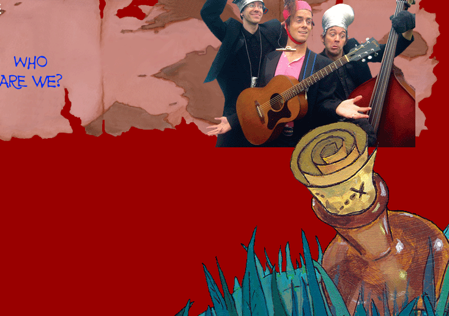

|  | ||
We're a Vancouver based three-piece group of professional musicians performing original, pirate-laced, minstrel-flavoured, kid-centric music. Since forming in 2004, we have performed at various festivals, schools and clubs. We don’t like to make ourselves blush telling you how great we are so we have included a Rotn Reviews section on this website wherein other musicians, teachers and festival organizers tell you how great we are.
What
do we do?
We perform a 35-40 minute interactive musical set involving the band,
the kids and their parents.
In addition, we offer optional 20-minute pre-show musical workshops.
What
are the Sam’s Rot’n Pot’n Pan Band Workshops?
In addition to our regular show, we offer an optional 20-minute “Rot’n
Pot’n Training Camp”. Kids are taught the words to a few of
our songs and helped in making some easy, inexpensive, and fun instruments
which they can play during the show and take home afterwards.
Our Drum/Percussion Workshop is
aimed at kids in grades 4 through 7, led by Paul Bray
· As an educator, Paul currently teaches percussion at the Sarah Mclachlan Music Outreach (SMO), an Arts Umbrella program. In the drum/percussion workshop Paul helps the kids quickly make some “5-Minutstruments”, specifically “Kitty litter bucket-drums” (though some say any bucket will do) and “pebble and rock shakers”. (We provide a list of “ingredients” necessary to make the instruments ahead of time).
· Paul then works with participating kids on our grand finale. They will perform with us on our closing song “I’ve Got a Pot’n Pan Band”.
Our Buzz, Hum and Sing Workshop is aimed at kids in Kindergarten through grade 2, led by Sam Newton
· In the workshop younger kids are helped to quickly make some other “5-minutstruments”, most notably the “toilet-paper roll kazoo”. As mentioned earlier, we provide a handout to be distributed prior to the event with materials required for the various instruments. The kazooists are then included in our show when we play the song “Karate Princess”.
Finally, the Tuba Workshop is aimed at kids in grade 2 through 4, led by Kevin Walsh
· In this workshop Kevin helps the kids make the infamous “Garden Hose Tuba”. Kids (and their parents) are taught all about the mysteries of the Tuba and are brought on stage to be included in the performance of our song “Tuba Girl”.